Before/after sheet · ADR-115 · LOCAL · 18 October 2026
Equal totals share a place, before and after
The real ranklist on LOCAL, shown twice from the same data. Before: LOCAL on the original ranking functions (ROW_NUMBER) and main’s front end (29943732). After: LOCAL on the migration (RANK()) and this branch’s front end. Tied fencers now share their place, and the rules modal says so. Nothing else moves. Names are masked because this page is committed (ADR-078).
What the sheet shows
The rule holds on every list; nothing else moves
| Check | Result |
|---|---|
| Tied fencers share their place, and the next place skips | yes: cases 1–3 (6, 6, 8 · 10, 10, 12 · 4, 4, 6 · 8, 8) |
| Every list on LOCAL, as the site reads it (all 142 lists, 1,135 rows) | 19 ties; 20 fencers move up, none down; every total and every list member unchanged; every rank is one more than the number of higher totals; row order changes only inside a tie (13 lists). The same 19 ties and 20 fencers PROD showed on 18 October. |
| Where the list pictures differ | pixel check: only the “#” cell of the tied rows on desktop; on the phone also the two swapped rows of case 3 (a wrapped name) |
| The drilldown of the fencer who moves up (case 3) | the place in the header reads 8 instead of 9; the rest of the drilldown’s text, scrolled parts included, is identical |
| The season rules modal | one new fact, first among the facts, under “Suma wliczonych wyników →”, in Polish and English; everything below it is pixel-identical once shifted down by the new fact |
| The FTL seed files | a shared place is one seed tier, in the ranking’s row order, in both generators (RANK.TIE.07) |
| Tests and gates | RANK.TIE.01–08 green, each seen failing first except the TypeScript seed guard, which was already right; scripts/preflight.sh exit 0 (15 gates); postgrestools check clean on the migration |
How it was made: two production builds (vite build) that differ only in SeasonRulesModal.svelte and the two string files, each served to headless Chromium by request interception, against LOCAL’s Supabase at device scale 2. For “before”, LOCAL was put back on its original function definitions; for “after”, the migration was re-applied and test 111 passed again (12 of 12).
Every tie on LOCAL
19 ties, 20 fencers up
| List | Sub-ranking | Equal total | Places before | Places after |
|---|---|---|---|---|
| PPW SPWS-2023-2024 | épée M V0 | 108.72 | 8, 9 | 8, 8 |
| PPW SPWS-2023-2024 | sabre M V0 | 18.79 | 7, 8 | 7, 7 |
| PPW SPWS-2024-2025 | épée M V1 | 1.00 | 22, 23 | 22, 22 |
| PPW SPWS-2024-2025 | épée M V3 | 1.00 | 17, 18 | 17, 17 |
| PPW SPWS-2024-2025 | foil M V1 | 84.29 | 4, 5 | 4, 4 |
| PPW SPWS-2024-2025 | sabre M V0 | 1.00 | 10, 11, 12 | 10, 10, 10 |
| PPW SPWS-2025-2026 | épée F V1 | 1.00 | 6, 7 | 6, 6 |
| PPW SPWS-2025-2026 | épée F V2 | 1.00 | 9, 10 | 9, 9 |
| PPW SPWS-2025-2026 | sabre M V0 | 37.74 | 6, 7 | 6, 6 |
| PPW SPWS-2025-2026 | sabre M V0 | 5.33 | 10, 11 | 10, 10 |
| PPW SPWS-2025-2026 | sabre M V2 | 2.00 | 16, 17 | 16, 16 |
| PPW SPWS-2026-2027 | épée F V1 | 1.00 | 6, 7 | 6, 6 |
| PPW SPWS-2026-2027 | épée F V2 | 96.35 | 4, 5 | 4, 4 |
| PPW SPWS-2026-2027 | épée M V4 | 5.99 | 9, 10 | 9, 9 |
| PPW SPWS-2026-2027 | sabre M V2 | 1.00 | 17, 18 | 17, 17 |
| Ranking SPWS-2026-2027 | épée F V1 | 1.00 | 7, 8 | 7, 7 |
| Ranking SPWS-2026-2027 | épée M V4 | 5.99 | 12, 13 | 12, 12 |
| Ranking SPWS-2026-2027 | sabre M V2 | 1.00 | 18, 19 | 18, 18 |
| Ranking SPWS-2026-2027 | sabre M V3 | 1.00 | 8, 9 | 8, 8 |
1 · A past season, two ties: sabre, men, V0 · PPW 2025/26
Rows 6 and 7 are both 37.74: 6 · 7 before, 6 · 6 after, and the next fencer stays 8th. Rows 10 and 11 are both 5.33: 10 · 11 becomes 10 · 10, the next stays 12th. Inside the 5.33 tie the two fencers also swap rows, now in alphabetical order; with the names masked only the place shows it.
Desktop, 1280 px

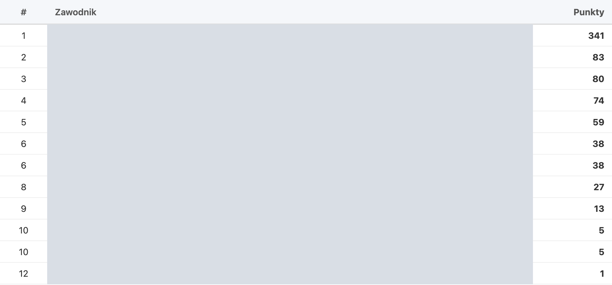
Phone, 375 px
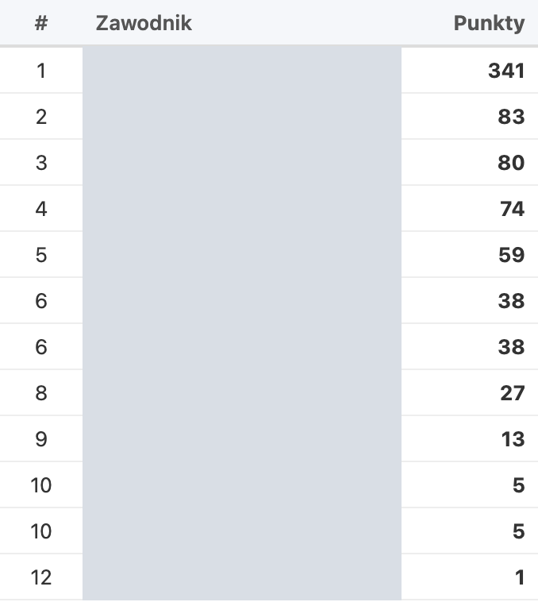
2 · The running season: épée, women, V2 · PPW 2026/27
Rows 4 and 5 are both 96.35: 4 · 5 becomes 4 · 4, and the next fencer stays 6th. Read with the rolling carry-over, as the site reads it.
Desktop, 1280 px
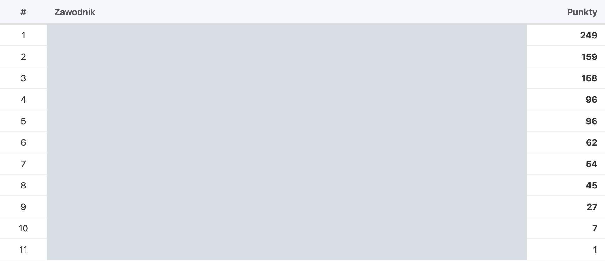
Phone, 375 px
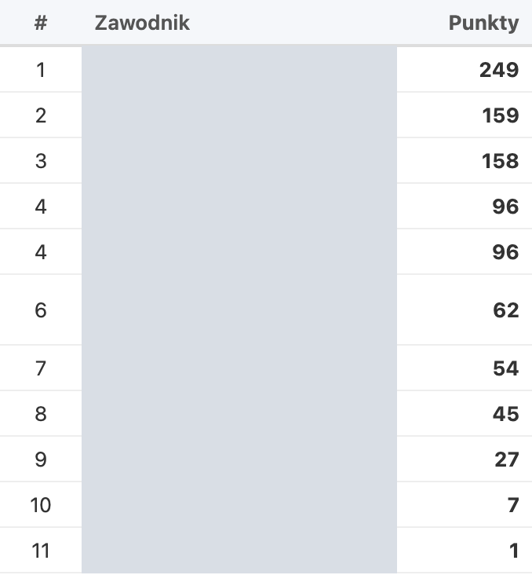
3 · The full ranking: sabre, men, V3 · Ranking 2026/27
Rows 8 and 9 are both 1.00: 8 · 9 becomes 8 · 8. The two fencers swap rows (alphabetical order inside the shared place). On the phone one of the two names wraps onto a second line, so the taller row moves with its fencer: that is the only reason the phone pair differs across the whole row.
Desktop, 1280 px
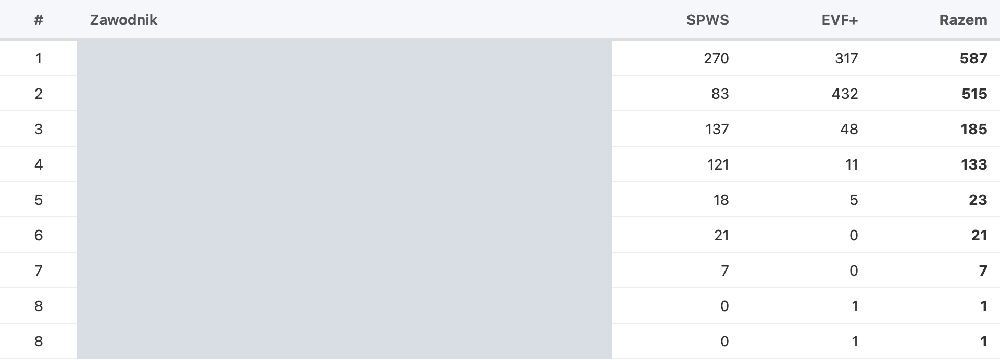
Phone, 375 px
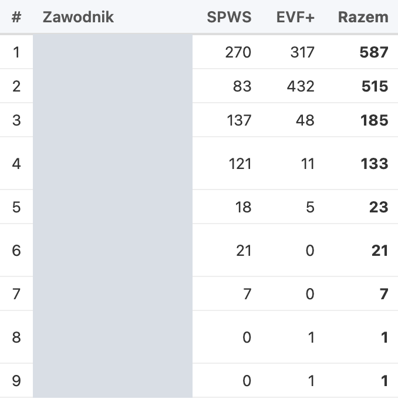
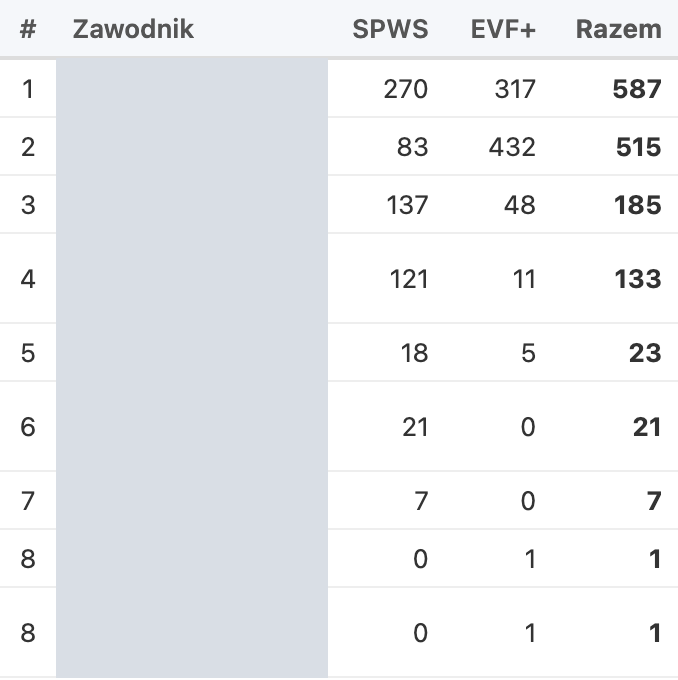
4 · The drilldown of the fencer who moves up
Sabre, men, V3, Ranking 2026/27: the fencer who was 9th on 1.00 is now 8th with the other 1.00. Only the place in the header changes; the list behind the modal is hidden so it cannot enter the comparison.
Desktop, 1280 px
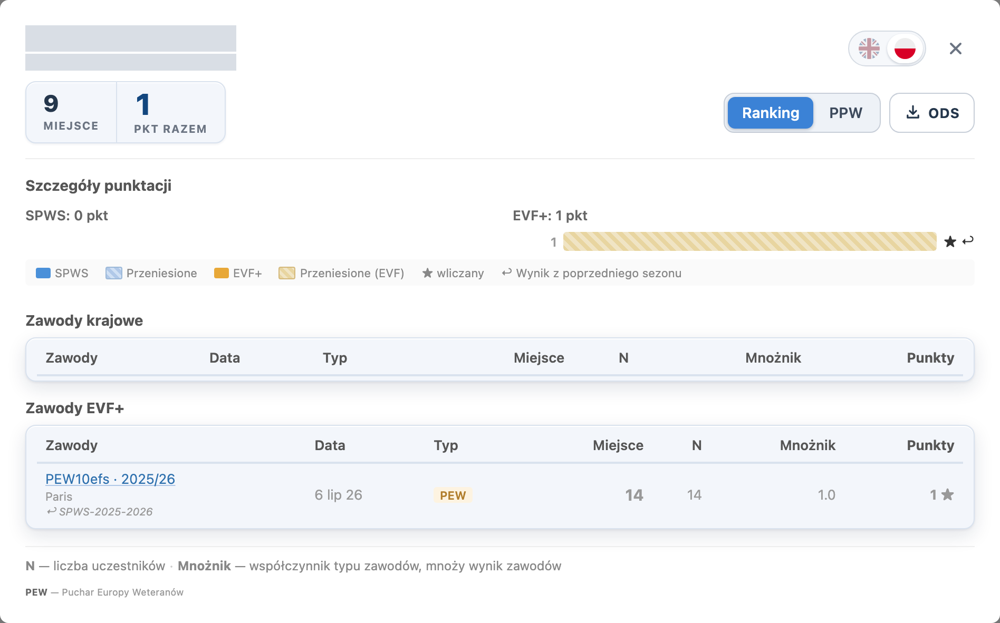
Phone, 375 px
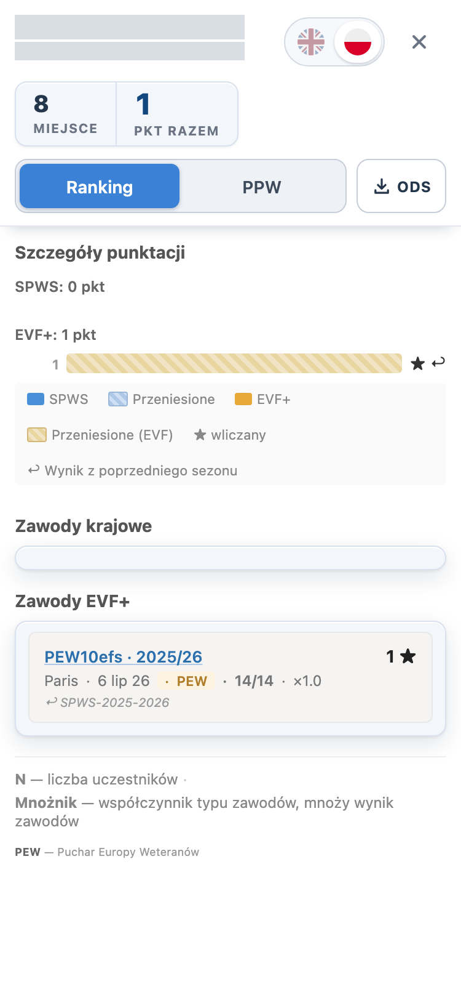
5 · The season rules modal
The new fact comes first, directly under the two “Suma wliczonych wyników →” lines: „Ta sama suma punktów daje to samo miejsce; kolejne miejsce przesuwa się o liczbę zawodników na tym miejscu (np. 16, 16, 18).” It shows for every season.
Polish, desktop
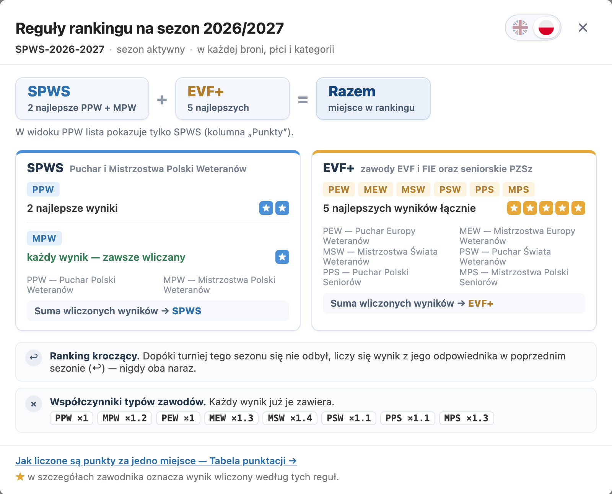
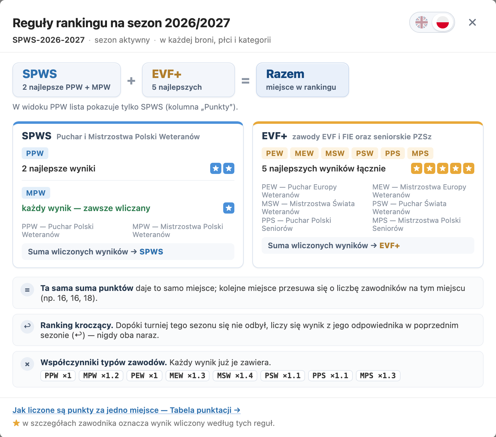
Polish, phone (first screen)
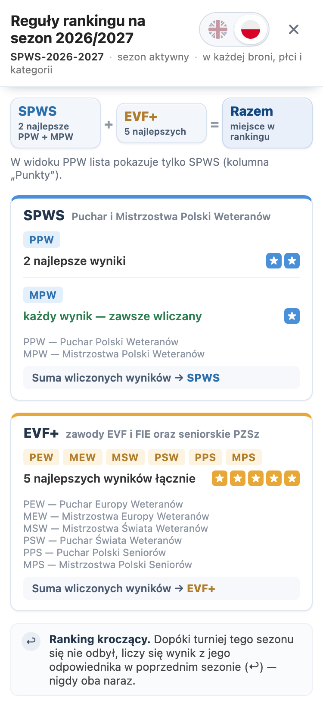
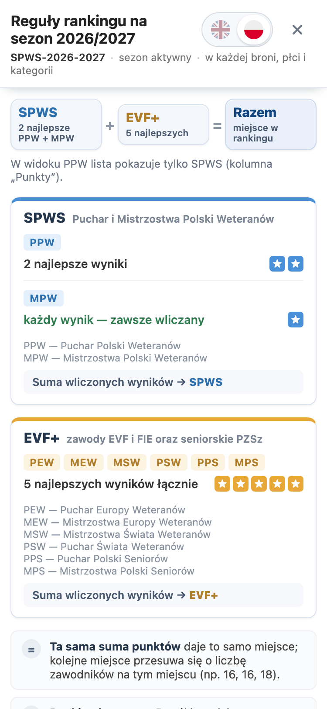
English, desktop
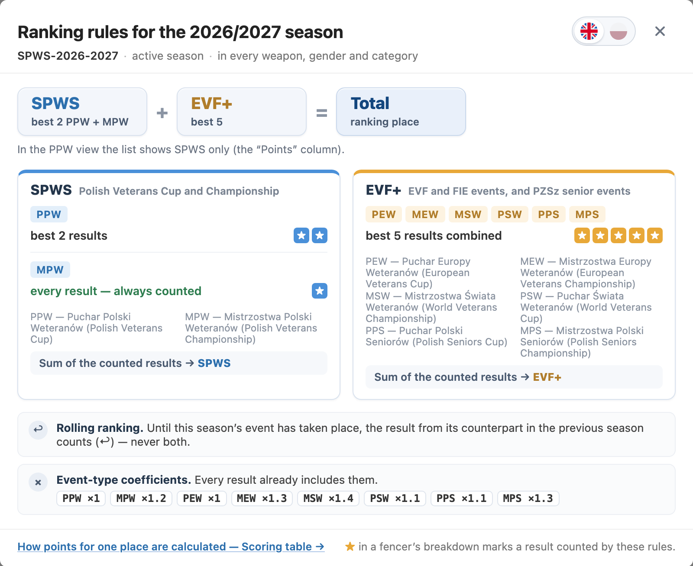
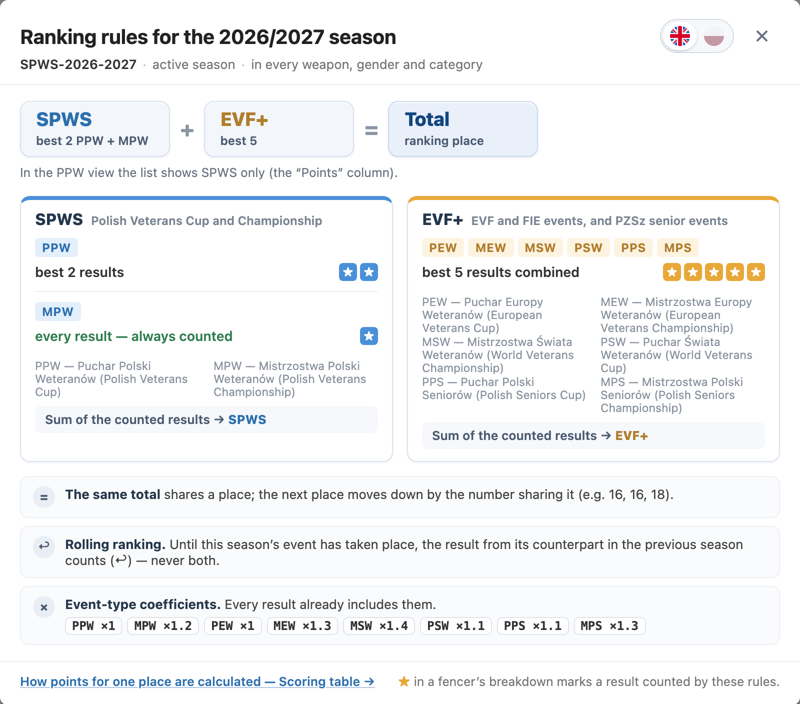
Found while building
One correction to the plan
The Python seed generator did need a change
The plan said neither seed generator needed one. The Python generator took a fencer’s seed tier from their position in the ranking list, not from the rank, so a shared 16th would have become tiers 16 and 17. It now carries the database’s rank, and RANK.TIE.07 checks both generators on the same case. No organiser received such a file: that path feeds only the e-mail delivery, which has never run; the organiser downloads the browser generator’s files, which needed no change. Recorded in the plan (§5), ADR-115 and ADR-080.
Decide this
Approval
A1 · Approve the sheet and release?
A (recommended): approve. I commit with explicit paths, integrate, push integration/main:main, announce the wait and watch CI and the Release run. CERT’s database takes the migration automatically, and I check CERT’s lists. The PROD database step waits for your approval in the Release run; after it, I check PROD’s lists (the 19 ties share their places, nothing else moved), the rules modal and a seed file.
One thing to know: a push to main puts the front end on PROD’s WordPress pages at once, with no gate. From that moment until you approve the PROD database step, PROD’s rules modal states the shared-place rule while PROD’s lists still number ties 16, 17. Approving the PROD step soon after CERT checks out keeps that window short.
B: change something first: say what.
Sources. Builds: main 29943732 and this branch’s SeasonRulesModal.svelte, en.json and pl.json; LOCAL Supabase (seed exported from PROD on 17 October 2026). Lists: fn_ranking_full / fn_ranking_ppw, the running season rolling and past seasons not. The LOCAL-wide comparison runs every list through both definitions and checks the invariants above. Scripts kept in the session scratchpad: ties_before_sql.py, dump_ranks.sh, diff_ranks.py, shoot_ties.cjs, compare_ties.py, pixel_ties.py, build_ties_sheet.py.